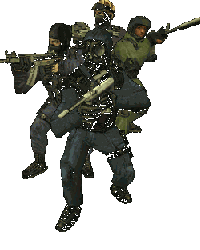
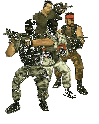

|
RATIONAL AUTONOMOUS CYBERNETIC COMMANDOS
Artificial Intelligence Opponent Development Project For First-Person Shooter Games
|

|
Intelligence (n.): faculty of understanding, discovering relations (of causality, identity) between facts and things.
"The possession of means to constraint things and men". [Ferral, A. Malraux, "Man's Fate"]
Life (n.): sum of the phenomenons enabling an organism to evolve from birth to death.
"It is rare a man can support his... how to say ? His man condition". [Gisors, A. Malraux, "Man's Fate"]
BRINGING ARTIFICIAL INTELLIGENCE TO VIDEO GAMES
|

|
This site was designed and written by PM with Microsoft Windows' Notepad in 100% hand-written HTML.
It makes some use of PNG graphics and should be viewed with a browser supporting such a format.
It makes also use of IFRAMES, as this tag is W3C compliant and should be viewable by any decent browser.
Best viewed in 1024×768.
© 2003, PM.
|